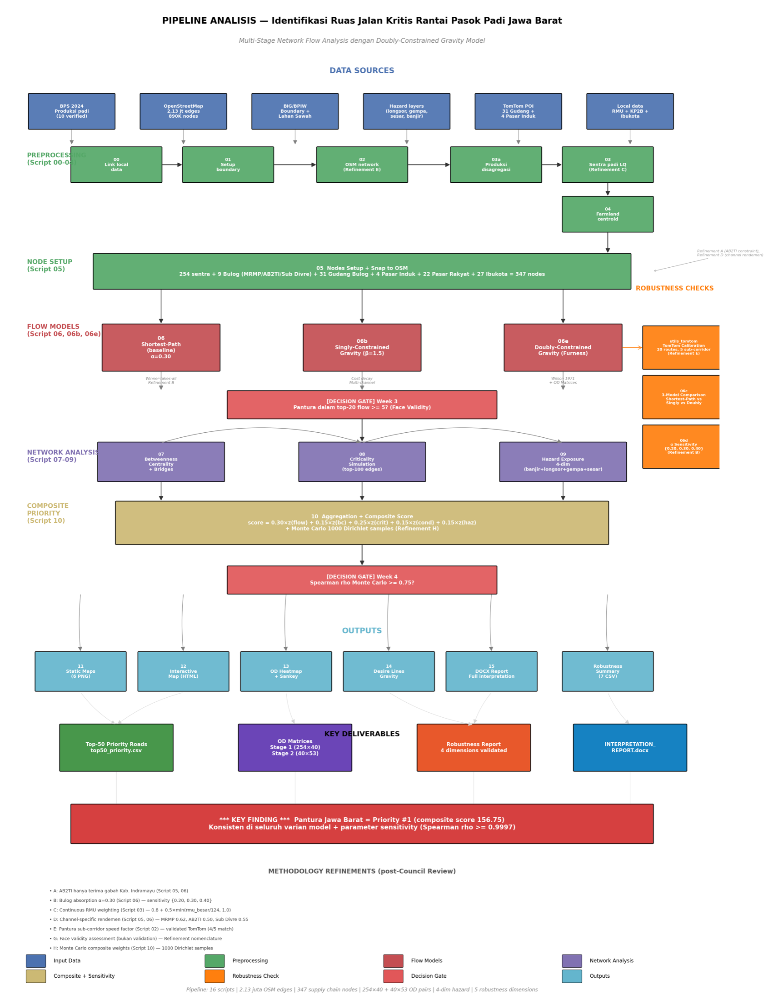
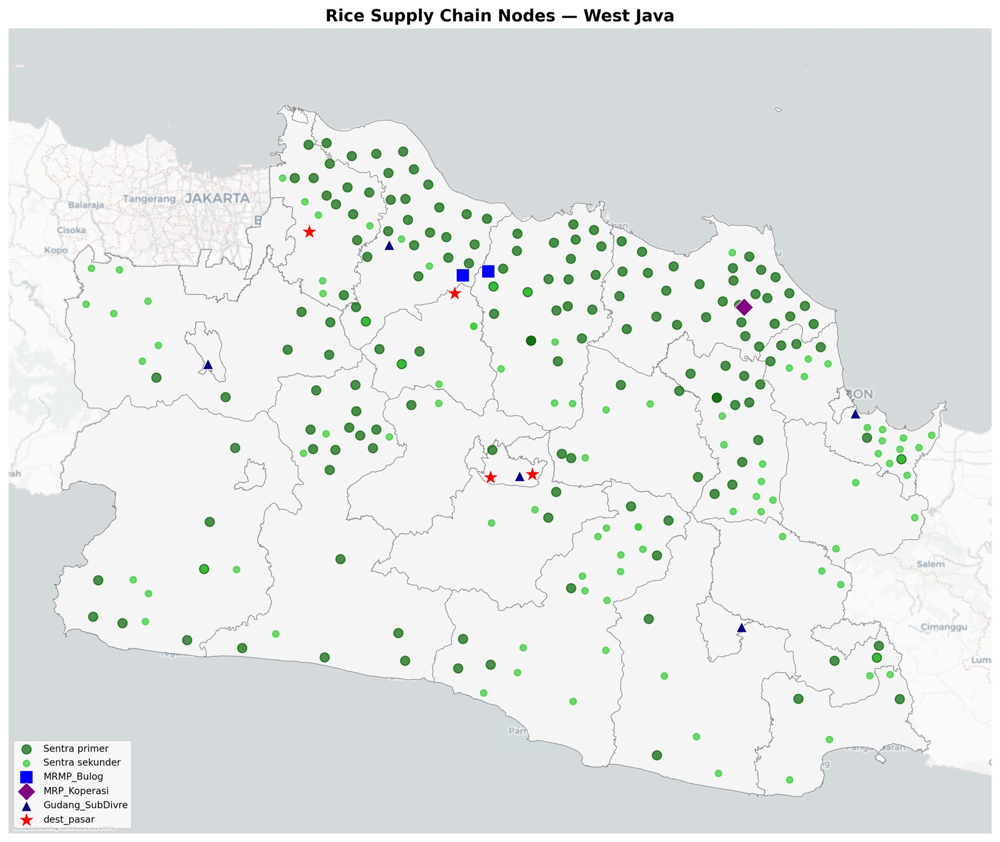
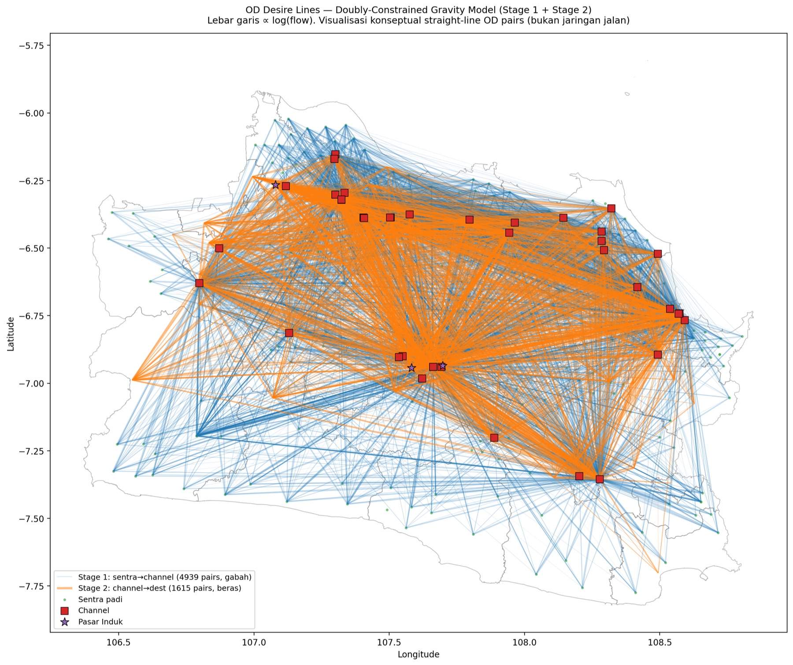
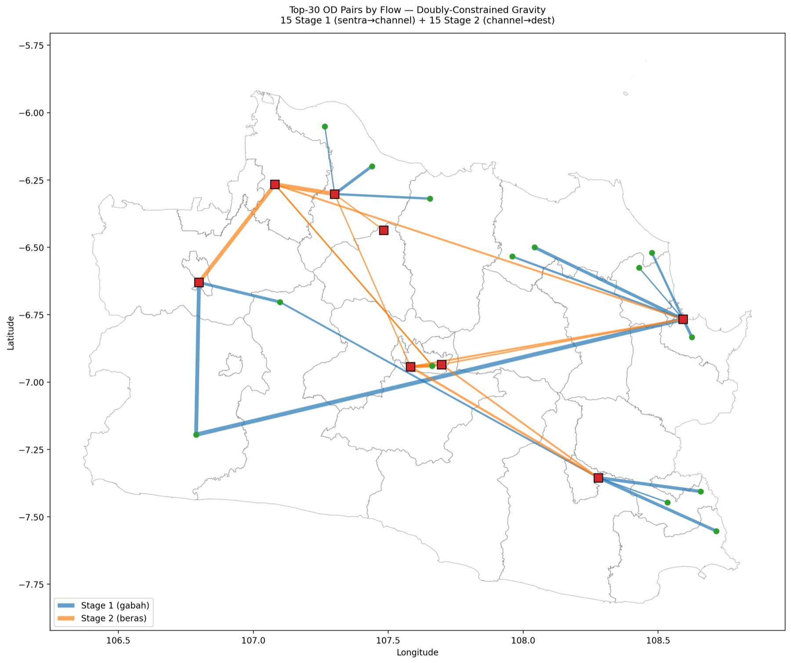
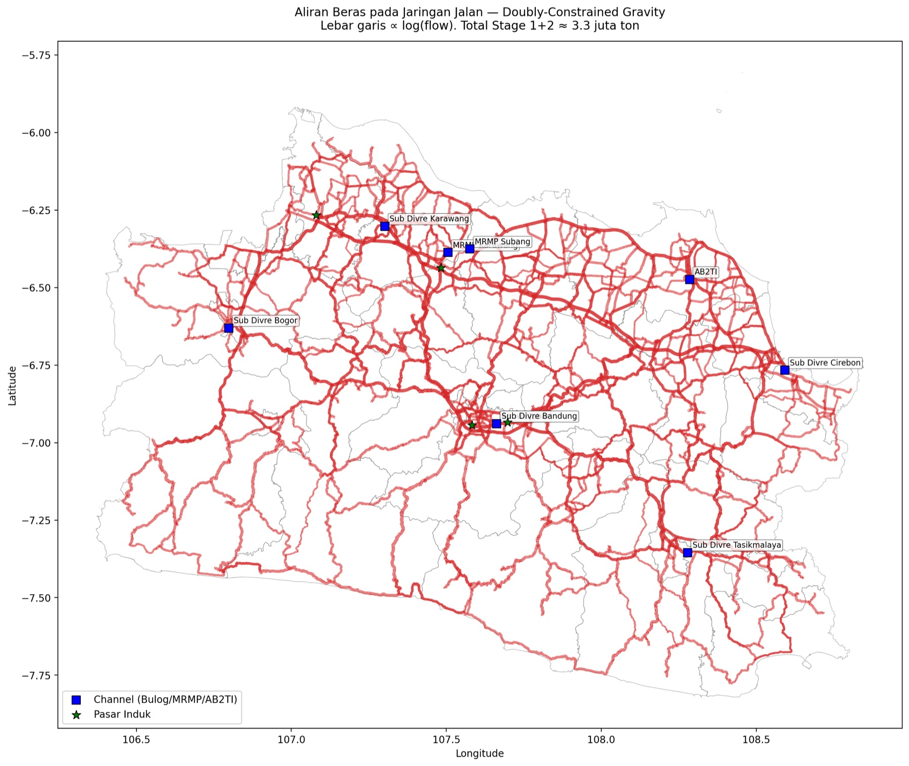
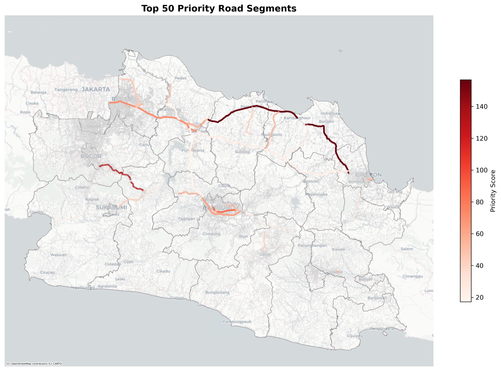

Objective
West Java is Indonesia’s 3rd-largest rice producer (8.63 million tons of dry unhulled rice / GKG, ~10% of national output), with over 50% of production concentrated in the North Coast (Pantura) corridor. The province’s rice-supply resilience depends on the road network linking production centers → processing facilities → markets.
Three objectives:
- Identify the most critical road segments based on a combination of logistics flow, network centrality, disruption impact, hazard exposure, and road condition.
- Validate the robustness of the ranking against the choice of flow-assignment methodology and parameters.
- Produce an explicit OD matrix and priority-road ranking as a reusable, reproducible transport-planning reference.

Methodology
Data assembly
BPS production figures, ~1 million rice-field polygons, the 2.13-million-edge OSM road network, 40 processing channels, 53 market destinations, and hazard layers.
Production centers
Regency production disaggregated to 713 districts by areal weighting; Location Quotient classifies 224 production centers; totals reconcile with BPS within 0.01%.
Supply-chain nodes
254 centers, 40 channels, and 53 destinations are snapped onto the road graph as origins, intermediates, and sinks.
Flow assignment × 3
Shortest-path, singly-constrained gravity, and doubly-constrained gravity (Furness) each route the two-stage tonnage over the network.
Composite priority
Five z-scored dimensions (flow, criticality, betweenness, condition, hazard) combine into one priority score per road segment.
Robustness × 4
TomTom speed calibration, α sensitivity, three-model comparison, and 1,000 Monte Carlo weight draws stress-test the ranking.
Priority ranking
Pantura holds #1 in every variant; 40 stable-core segments are confirmed with ρ ≥ 0.9987 across all tests.
Why a multi-stage flow. Rice changes state along the chain: farms ship unhulled grain (gabah) to processing channels, mills convert it to milled rice (beras) at channel-specific yields, and the rice moves on to markets. Modeling this as two linked stages over the West Java OSM network (2,133,733 edges, 890,273 nodes) keeps volumes physically consistent: Stage 2 totals equal Stage 1 inflows after each channel’s milling yield (0.62 for MRMP, 0.50 for AB2TI, 0.55 for Sub-Divre and warehouses). A single-stage shortcut would route tonnage that never exists. Stage 1 is also scaled by the Bulog absorption parameter α = 0.30, the share of production entering the formal channel system; the rest flows through informal private mills and local markets.
Locating production. BPS reports production by regency, but the network needs finer origins. Production is therefore disaggregated to 713 districts by areal weighting over ~1 million mapped rice-field polygons: each district receives production in proportion to its paddy area, and the totals are checked to reconcile with official BPS figures within 0.01%. The Location Quotient, a district’s production share divided by its area share, then classifies 224 districts as primary (LQ ≥ 2) or secondary (1 ≤ LQ < 2) production centers, with KP2B protected-farmland zones as a spatial cross-check.
Three flow models, on purpose. Flow assignment is where methodological choices bite hardest, so three models were run and compared rather than trusting one. Shortest-path sends each origin’s entire formal volume to its cheapest channel; it is the transparent baseline, but it ignores capacity (one mill received 352k tons against a 120 ton/day capacity). Singly-constrained gravity spreads each origin’s volume across channels in proportion to attractiveness × exp(−β·cost), with β = 1.5 from the agricultural-goods literature; origin totals are conserved, but busy channels can still overload. The doubly-constrained model (Wilson, 1971) conserves both ends: balancing factors for every origin and channel are solved by Furness iteration (up to 50 iterations, tolerance 1e-4) until each origin ships exactly its supply and each channel receives a capacity-proportional demand. That last property is what makes its flows physically credible.
Travel costs. Route costs combine network distance with road-class speeds, adjusted by sub-corridor speed factors. Twenty truck routes from the TomTom Routing API calibrate those factors against observed driving times: four of five Pantura sub-corridors came in within ±10% of the heuristic, and the Cipali toll factor was revised downward where it overestimated speed.
From flows to a ranking. Edge-level flows are aggregated to named road segments (grouping by name + highway class, with osmid for unnamed roads, which prevents artificial mega-segments). Each segment is then scored on five standardized dimensions:
z-scores put the five dimensions on a common scale before weighting. Flow is the modeled tonnage; criticality is the simulated impact of disrupting the segment; betweenness is topological importance, approximated by sampling (k = 500) because the 890k-node graph is too large for exact computation; condition and hazard act as risk modifiers. The weights reflect a structured expert review, and their influence is itself tested below.
Refinements and robustness. Seven refinements harden the model: the AB2TI channel restricted to Indramayu origins, α = 0.30 absorption, continuous rice-mill weighting per regency, channel-specific yields, Pantura speed factors, face-validity framing of the validation, and Monte Carlo weights. Robustness is then tested on four independent axes: empirical speed calibration (TomTom), α swept over {0.20, 0.30, 0.40}, the three flow models compared head-to-head, and 1,000 Dirichlet draws over the composite weights to see whether the ranking survives weight uncertainty.
Data Used
| Data type | Source | Coverage |
|---|---|---|
| Rice production | BPS West Java 2024 | 10/27 verified, 17/27 estimated |
| Road network | OpenStreetMap (OSMnx, Overpass) | 2.13 million edges |
| Rice fields | BPIW Rice Field Map | ~1 million polygons |
| KP2B & boundaries | Data JABAR / Geoportal BIG | 27 regencies + 627 districts |
| Existing RMU | West Java Agriculture Agency | 30,941 units |
| Channels (Bulog) | TomTom POI + OSM | 5 Sub-Divre + 2 MRMP + 1 AB2TI + 31 warehouses |
| Destinations | TomTom POI + Data JABAR | 4 central markets + 22 public markets + 27 capitals |
| Hazards | Data JABAR | Landslide · earthquake · fault |
| Speed calibration | TomTom Routing API (truck) | 20 routes · 5 Pantura sub-corridors |
Transparently disclosed limitations: flood hazard not covered (excluded, weights renormalized), condition modifier defaulted to 1.0, and 17 regencies/cities estimated via areal weighting.
Analysis
OD matrices were built for both stages (254 centers × 40 channels; 40 channels × 53 destinations), visualized as desire lines & heatmaps. Flow was accumulated per OSM edge (line width ∝ log flow), composite scoring integrated 5 dimensions, and robustness was tested across 4 dimensions including a 1,000-sample Dirichlet Monte Carlo.






Results
- Pantura West Java = priority road #1 (composite score 156.72), consistently at the top across all model variants & parameters. The backbone of West Java’s rice logistics (Karawang–Subang–Indramayu–Cirebon).
- Top-10 includes nationally strategic corridors: Pantura WJ, Puncak Highway (Bogor–Cianjur), Soekarno-Hatta (Bandung), Jakarta–Cikampek Toll, Padalarang–Cileunyi Toll, and the new finding Patrol–Haurgeulis–Bantarwaru Road (the Indramayu inland corridor).
- Doubly-gravity is the most realistic. Shortest-path produces unrealistic concentration (MRMP Subang 352k tons despite a 120 tons/day capacity); doubly-gravity is capacity-proportional (6 Sub-Divre @166k tons).
- Destination concentration. 4 central markets absorb 55.8% of total milled-rice flow; Pasar Induk Cibitung alone takes 25.0% (292,628 tons), a wholesale-dominated structure typical of Indonesia’s rice supply chain.
| Robustness dimension | Result |
|---|---|
| TomTom calibration | 4/5 sub-corridors within ±10% tolerance |
| α sensitivity | ρ = 1.00; top-10 overlap 100% |
| 3 flow models | ρ ≥ 0.9997 |
| Monte Carlo weights | ρ = 0.9986; 40 stable-core segments |



Methodological contribution: the first application of a doubly-constrained gravity model with Furness balancing for Indonesia’s rice supply chain, empirically validated with TomTom, with an explicit OD matrix as a transport-planning reference. The pipeline (~3,500 lines of Python, 14 scripts) is available as a reproducible research artifact.
Conclusion: Pantura West Java is the single most critical artery for the province’s rice supply chain, holding the #1 composite priority score (156.72) across every model variant and parameter setting. The ranking is highly robust (Spearman ρ ≥ 0.9987 across all tests), and a stable core of 40 segments stays within the top-50 in ≥95% of Monte Carlo iterations, a statistically confident set of priority roads. Flow concentrates heavily on four central markets (55.8% of milled-rice volume), reflecting a wholesale-dominated supply structure.
References
Wilson, A. G. (1971). A family of spatial interaction models, and associated developments. Environment and Planning A, 3(1), 1–32.
BPS Jawa Barat (2024). Rice production statistics (provincial & regency level).
BPIW, Ministry of Public Works & Housing, Rice Field Map & administrative boundaries (via Geoportal BIG).
OpenStreetMap contributors, West Java road network (via OSMnx / Overpass API).
TomTom, Points of Interest & Routing API (truck profile, real-time traffic).
Data JABAR (Open Data Jawa Barat), landslide, earthquake & fault hazards; public & central markets.
West Java Agriculture Agency (Dinas Pertanian Jabar), existing rice-milling units (RMU).